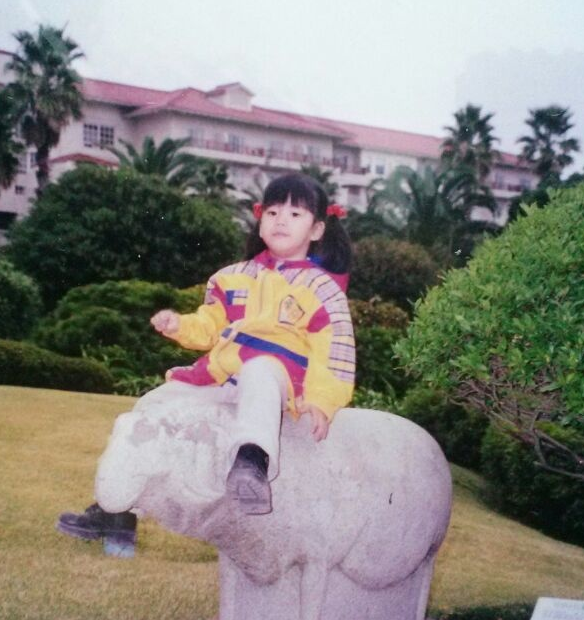

About Me
한빈 (HAN BIN)

My name is BIN HAN
I graduated from Korea University majoring in
Civil,Environmental and Architectural Engineering and Computer.
I am attending the Computer department of Korea University Graduate School.
My interest is HCI, AR , Robotics , Deep Learning and Algorithm.
Education
| KAIST IP Business education institute for gifted - Intensive Course |
2012.3 ~ 2014.3 |
| Hansung Science High School (Early graduation) |
2013.03 ~ 2015.02 |
| Korea University - Civil,Environmental and Architectural Engineering |
2015.03 ~ 2019.8 |
| Korea University - Computer |
2015.03 ~ 2019.8 |
| Korea University Graduate School - Computer , Software |
2019.09 ~ |
Experience
| Science education institute for gifted - Seoul Seobu District Office of Education |
2011.03 ~ 2012.12 |
| KAIST IP Business education institute for gifted - Intensive Course |
2012.03 ~ 2014.03 |
| KUDT (Korea University Dance Team) |
2015.06 ~ 2016.12 |
| Korea University - KU Undergraduate researcher Program 3rd |
2017.10 ~ 2018.02 |
| Korea University - KU Undergraduate researcher Program 4th |
2018.05 ~ 2018.11 |
| Undergraduate researcher - Hyper Media Lab |
2017.09 ~ 2018.12 |
| KUCC (Korea University Computer Club) |
2017.03 ~ 2019.08 |
| Undergraduate researcher - Digital Experience Lab |
2019.01 ~ 2019.08 |
Award
| Academic Achievement Award |
2018 |
| 2019 Capstone Design Competition - Gold Award |
Interior Design Application using Augmented Reality |
| "Gödel's Legacy: Does future lie in the past?" at the University of Vienna - Gold Medal |
A P-NP predicate with one variable whose domain is a set of worlds |
| VRAR Contents Idea Contest - third prize |
Untact Library VR |
Research
| Design Linked Data Applications for General Users; 유수진, 박성빈, Bin Han, 김지현 (Best paper Award) |
IIBC 2018 6th Comprehensive Conference |
| A P-NP predicate with one variable whose domain is a set of worlds |
"Gödel's Legacy: Does future lie in the past?" at the University of Vienna |
| 2D/3D Mixed Interface for Furniture Placement in Smartphone-based Mobile Augmented Reality |
VRST 2019 - Poster |
| An Approach to Compute Hyperlinks on the Web of Data ; Solgil Oh , Bin Han , Jeonghoon Park , Seongbin Park |
BCPT 2020 - Basic & Clinical Pharmacology & Toxicology |
| Application of Semantic Web technologies in Informatics Education ; Bin Han , Kyurhee Han , Jieun Kim , Seongbin Park |
ISSEP 2020 - International Conference on Informatics in School: Situation, Evaluation, Problems<\a> |